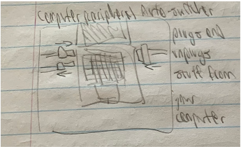

Have you ever told a joke, but no-one laughed? It must be because they didn’t know that the joke was over. The Joke Detector is a device that plays a sting after you tell a joke, so your audience knows when to laugh. This device uses an Arduino to listen for a sound input, and when it detects that the sound has stopped, it uses a motor to hit a small drum and cymbal to make the classic “ba-dum-tish” sting.
During the sketching process, I came up with a few different ways to implement this idea. The design I settled on only detects sound, rather than implementing any sort of speech recognition that would actually determine if speech contained a joke or not. While this is probably possible to do with a better microphone and computing power, it is beyond the Arduino’s capabilities (and mine).
I then designed the circuitry and code for the device using Tinkercad (embedded below). My initial plan for the implementation was to use three drumsticks for each hit of the sting. However, this would have required three motors, and when constructing the physical device, I found that the Arduino plus a 9V battery was not enough to power all of these and the sound sensor. I settled for using only the sound sensor and a single small servo motor, both powered directly off of the Arduino. Also, Tinkercad does not include a sound sensor in their component list, so I simulated it in the circuit by using a button instead, as both the sensor and the button provide a digital input (1 or 0 only). However, when testing the sound sensor, I found that while it does send a digital input, it does not send a constant input like the button. In particular, it would register input for each word spoken in a sentence but not the spaces between the words, which is not useful for detecting the end of a sentence. I got around this by setting a flag if sound was detected, and then checking every few seconds if sound is still being detected.
Sketches:
Detail Sketches: